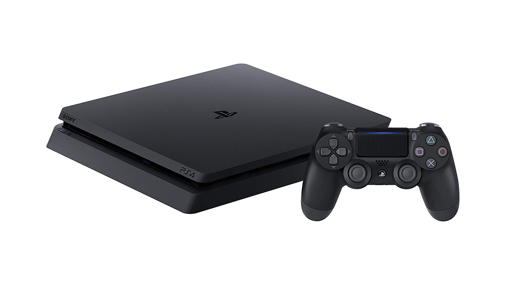
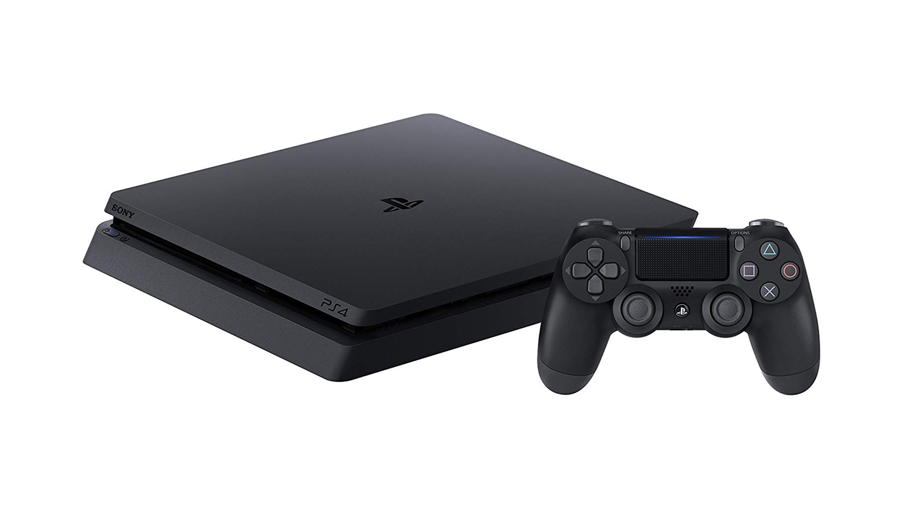

Welcome to my gaming page! Here, you’ll find some of my favorite video games and a short summary, playthroughs, and things that I love about these games! In here you’ll find: Super Smash Bros. Ultimate for the Nintendo Switch and Persona 5 for the Playstation 4
 


Persona 5

Super Smash Bros. Ultimate
Super smash brothers is a crossover fighting game featuring various, mainly nintendo characters as well as a guest of other third party video game characters. The objective of the game? Beat your foe by sending them flying! Super smash brothers can be a little complicated for beginners. For most people, like myself, I love to watch tutorials so I can learn the basics of the game. To the left is a wonderful tutorial found on youtube, take a look. The bottom images are three of my favorite characters!
Persona 5 is part of a library of video games known as Japanese Role-playing games or JRPGs for short. You start off as the protagonist Joker as he realizes that he can travel to an alternate dimension known as the metaverse. While at the metaverse, Joker brings a long a talking cat as well as other classmates on his journey to change the hearts of villains by ‘stealing their heart.’ In this game you will not only be socializing with friends outside of the metaverse but you’ll be fighting ferocious foes in a tactical turned based RPG. IGN, a famous video game critique website gave this game a 9.7/10. A must try!